채널: 레디포그로스 (Ready For Growth) | 길이: 15:01 | 날짜: 2026-02-17
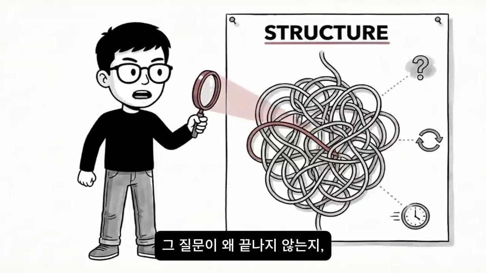
영상은 밤 11시 침대 장면에서 시작한다. 화자는 “오늘도 끝났는데 머릿속에서 뭔가가 시작된다”고 말하며, “나는 뭘 하고 싶은 걸까?”가 어제·지난주·수년째 반복될 수 있는 질문임을 제시한다. 아침에도 알람을 끄며 “오늘은 뭔가 해봐야지”라고 생각하지만, 동시에 “하고 싶은 게 너무 많은 것 같기도 하고 하나도 없는 것 같기도 하다”는 양가 상태를 말한다.
화면은 STRUCTURE 제목 아래 복잡하게 엉킨 선(매듭)을 확대경으로 들여다보는 캐릭터를 보여준다. 오른쪽에는 물음표, 순환 화살표, 시계 아이콘이 배치되어 있어 “질문-반복-시간 경과”의 구조적 문제를 예고한다. 즉 오프닝부터 감정 토로가 아니라 구조 해부를 선언한다.
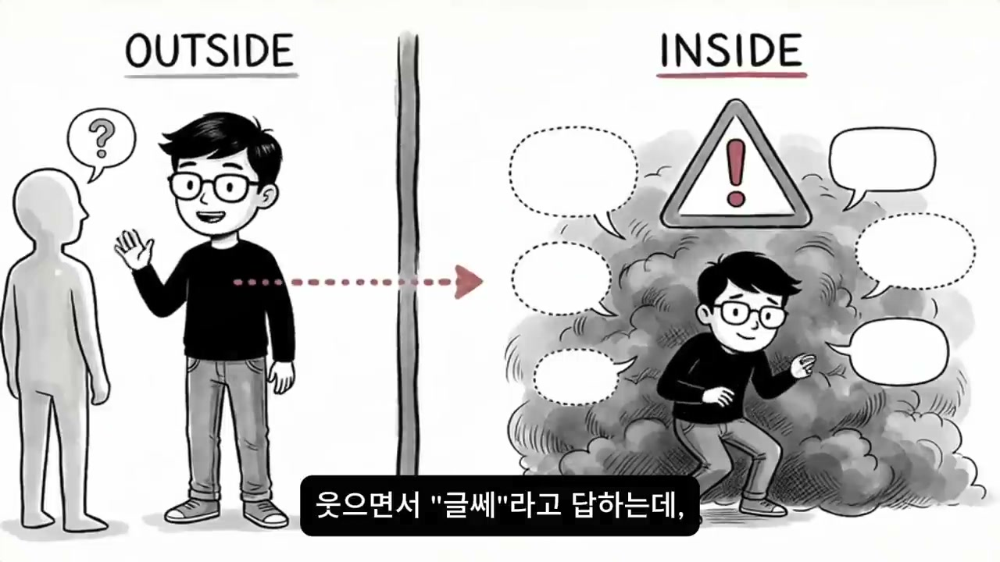
출근길, 이어폰, 브이로그 시청, 타인과의 비교(“저 사람은 자기가 뭘 좋아하는지 아는 것 같은데”)가 나온다. 점심시간 동료 질문(“요즘 뭐 하고 싶은 거 있어?”)에는 웃으며 “글쎄”라고 답하지만 내면에서는 그 질문이 가장 무섭다고 표현한다. 퇴근 후 카페에서 미래 계획·하고 싶은 일·관심 분야를 써보면 10줄쯤 나오지만, 이것이 해답이 되지 않는다.
시각적으로는 SELF-REFERRAL 장면이 제시된다. 거울 속 자기상, past(시계), self(물음표), future(달력)가 루프 화살표로 연결되어 “현재 경험”보다 “자기 해석 시뮬레이션”이 강화되는 상태를 상징한다.
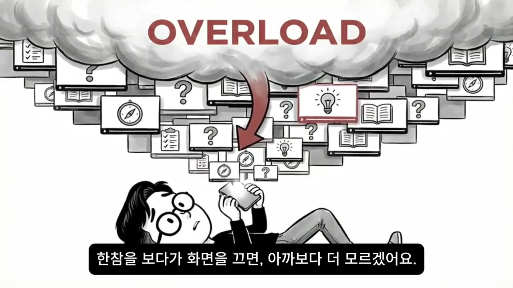
10줄을 적고 나서도 화자는 “이 중에 진짜 내 것은 뭘까? 다 맞는 것 같고 다 아닌 것 같다”고 말한다. 집에 와서 자기계발 영상, 적성검사, 진로상담 콘텐츠를 보지만, 화면을 끄면 오히려 더 모르게 된다고 진술한다. 결론적으로 질문은 더 강하게 귀환한다: “왜 이 질문만큼은 아무리 생각해도 답이 안 나오나?”
화면은 OUTSIDE와 INSIDE를 분할해 외적 반응(웃으며 대화)과 내적 상태(경고표시·연기·다중 말풍선 속 불안)를 대비한다. 여기서 영상은 “정보 섭취량 증가 = 선명한 결론”이라는 통념이 깨지는 지점을 시각화한다.
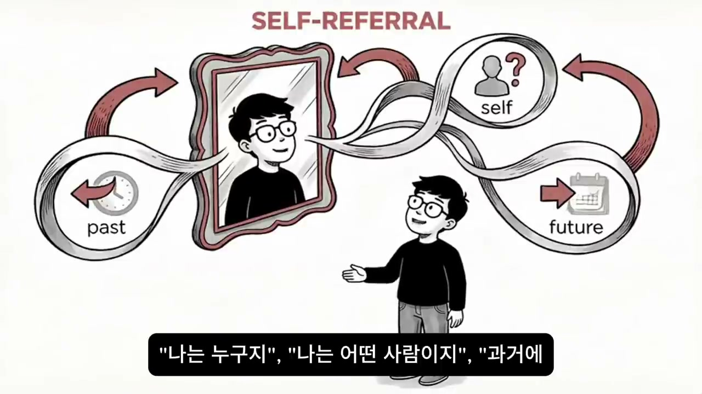
화자는 뇌과학 개념으로 디폴트 모드 네트워크를 소개한다. 멍 때리거나 아무것도 안 할 때 오히려 켜지며, “나는 누구지/어떤 사람이지/과거가 이랬으니 미래도 이럴까” 같은 자기참조적 사고를 생성한다고 설명한다. 일반적으로는 잠깐 활성화됐다가 다른 작업으로 전환된다.
시각적으로는 OVERLOAD 구름 아래 수많은 정보 패널(책, 체크리스트, 물음표, 전구 등)이 쏟아지는 장면이 등장한다. 즉 DMN 자체보다 “DMN + 과잉 정보 소비”가 결합될 때 혼란이 증폭되는 프레임을 준다.
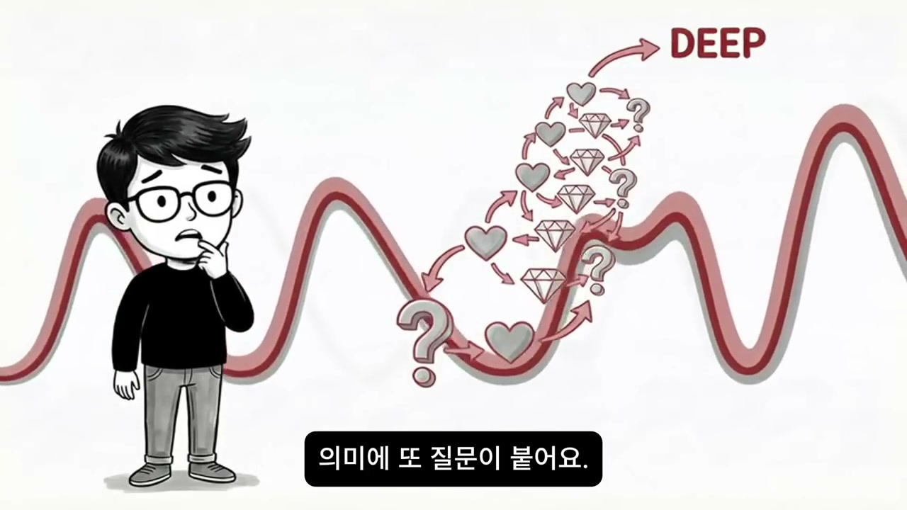
다음 주장은 개인차다. “내면 가치 중심으로 사고하는 뇌”는 이 영역이 더 오래, 더 깊게 작동한다는 설명이 나온다. 한 번 “나는 누구지?”가 켜지면 감정이 붙고, 감정에 의미가 붙고, 의미에 다시 질문이 붙는 연쇄가 형성된다는 것이다.
화면의 DEEP 표기는 파형 위에 하트, 다이아, 물음표가 단계적으로 얹히는 구조로 그려진다. 이는 단순 반복이 아니라 정서-가치-질문의 심층화 루프라는 해석을 강화한다.
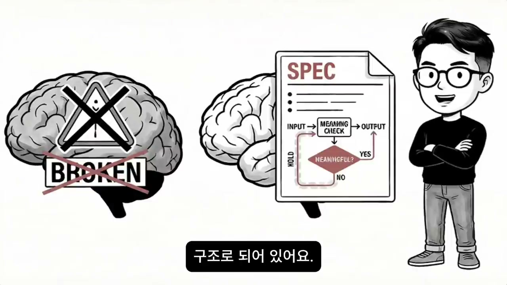
중요한 전환 문장: “답을 못 찾는 게 아니라, 뇌가 아직 답을 고르는 중이었다.” 화자는 이를 고장이 아닌 사양(spec)으로 정의한다. 뇌는 “이게 진짜 나에게 의미가 있는가”를 먼저 확인하며, 의미 검증이 통과되지 않으면 출력(결론)을 보류한다는 것이다.
화면은 PREFRONTAL 영역에서 여러 입력(책·나침반·체크리스트·전구)이 깔때기로 모여 CONCLUSION으로 나가는 도식이다. 즉 결론은 ‘의지 버튼’이 아니라 ‘입력 처리 결과’라는 계산 모델로 제시된다.
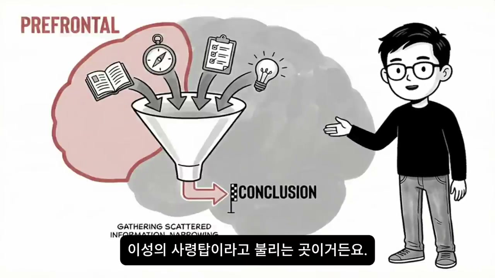
“왜 몇 년째 끝나지 않나?”에 대한 두 번째 구조로 전두엽이 제시된다. 전두엽은 여러 정보를 모아 하나의 판단으로 좁히는 영역이며, “이건 이거, 저건 저거, 그래서 이걸 선택”의 실행부다. 여기서 결론을 내려면 조건이 하나 필요한데, 바로 재료다.
화면은 왼쪽 BROKEN 뇌(고장 프레임)와 오른쪽 SPEC 문서(입력→의미 체크→의미 있으면 출력, 아니면 보류)로 대비된다. 메시지는 명확하다: 문제는 결함이 아니라 처리 규칙이다.
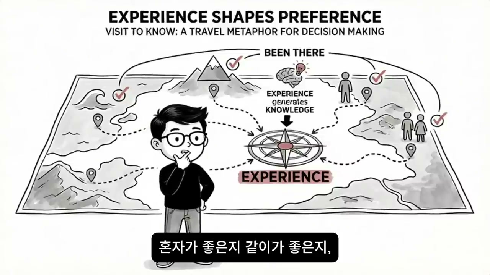
재료의 정체는 경험 데이터다. 화자는 여행 비유를 든다: 목적지를 고르려면 최소한 몇 군데는 가봐야 바다가 좋은지 산이 좋은지, 혼자가 맞는지 동행이 맞는지 감이 생긴다. 지금의 루프는 “한 번도 떠나지 않고 지도만 보며 목적지를 고르려는 상태”라는 진단이다.
화면에서는 순환 루프가 시계 11 PM로 되돌아가고, 캐릭터가 바닥에 누워 있는 장면이 나온다. 이는 경험 입력이 없는 상태에서 사고만 반복될 때 생기는 시간 고착을 보여준다.
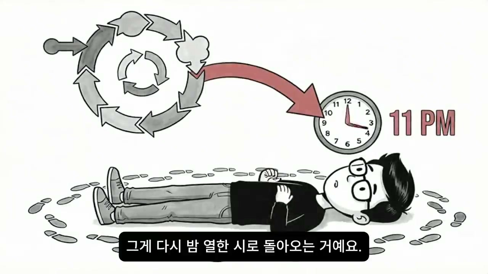
전두엽에 경험 데이터가 없으면 결론을 낼 수 없다. 결론이 없으니 DMN이 다시 켜지고, “나는 뭘 원하는 거지?” 시뮬레이션이 재시작되지만 새 데이터가 없어서 결론은 여전히 나오지 않는다. 그래서 다시 밤 11시로 돌아온다.
화면은 THIS IS IT(이거다) 스타버스트와 시간축, 흩어진 경험 프레임이 연결된 도식이다. 이는 “결론이 생길 때는 추상 사고가 아니라, 축적된 경험 노드가 하나로 맞물릴 때”라는 암시를 준다.
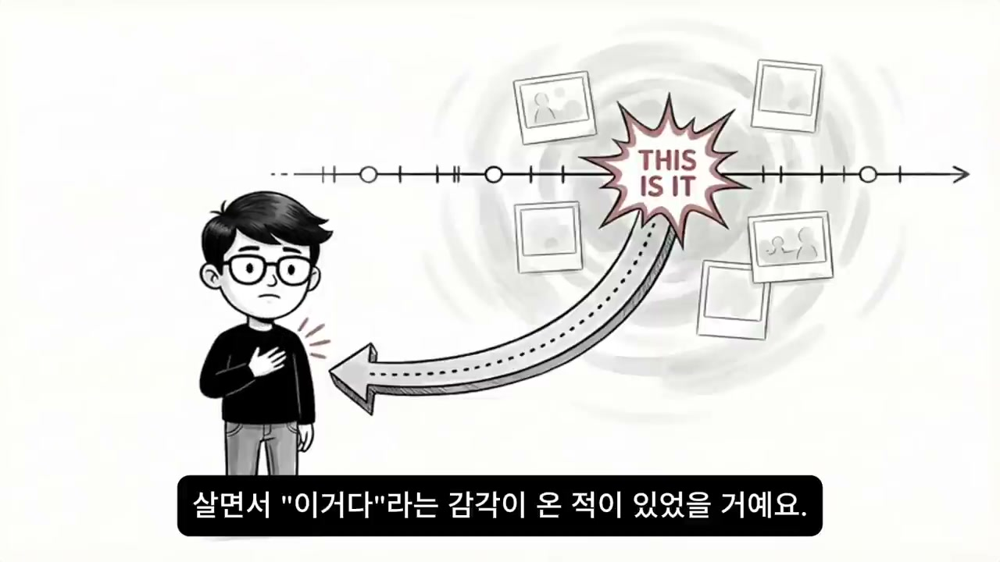
화자는 “그럼 뭘 해야 하느냐”로 넘어가며 반전을 준다: 사실 뇌는 이미 답을 만든 적이 있다. 인생에서 “이거다” 감각이 왔던 순간들(글을 읽다 심장이 뛴 순간, 누군가 이야기 듣고 ‘나도 저렇게 살고 싶다’ 느낀 순간, 몰입하다 시간 사라진 순간)을 소환한다.
화면의 인포그래픽 제목은 EXPERIENCE SHAPES PREFERENCE이며, 부제는 A TRAVEL METAPHOR FOR DECISION MAKING이다. BEEN THERE, EXPERIENCE generates KNOWLEDGE, 중앙 EXPERIENCE 나침반이 있어 “취향·선호·우선순위는 체험 후 형성”이라는 주장을 시각적으로 고정한다.
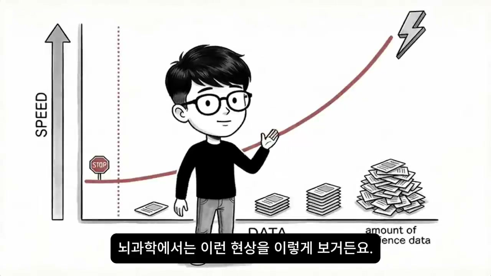
그 순간 전두엽은 빠르게 결론을 낸다: “이건 의미 있다.” 이유는 머리 속 시뮬레이션이 아니라 몸이 겪은 경험 데이터가 있기 때문이다. 영상은 이를 “전두엽 결론 속도는 입력 데이터 양에 비례”라는 문장으로 요약한다.
화면에는 SPEED-DATA 그래프와 경험 데이터 더미가 커질수록 상승하는 곡선이 그려진다. 저데이터 구간의 정지 표식은 “판단 정체는 이상이 아니라 입력 부족”임을 강조한다.
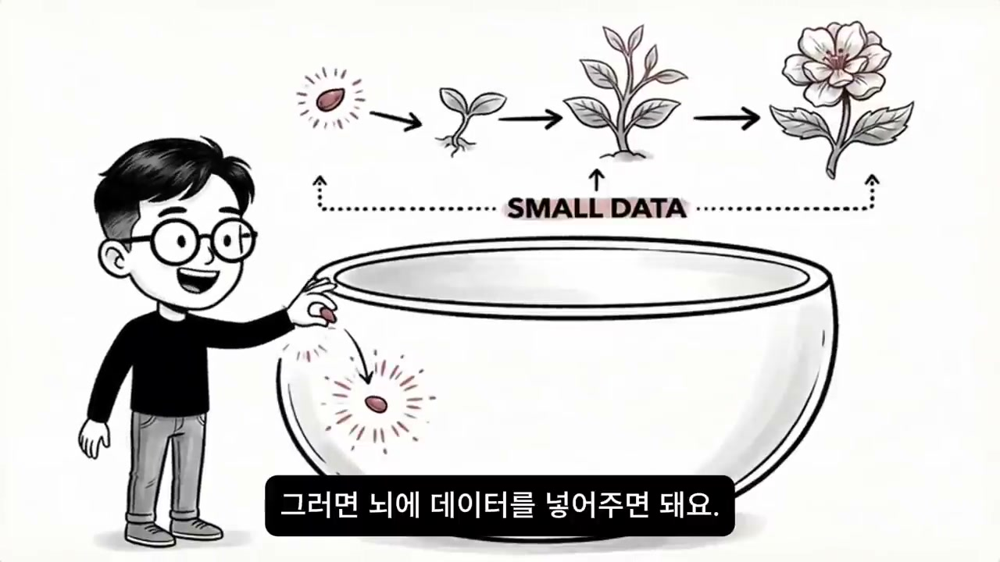
요리 비유가 등장한다. 레시피 영상 100개를 봐도 맛은 모르고, 한 번 직접 볶아보면 “아 이 간이구나”를 체득한다. 정체성도 동일해서 생각만으로는 ‘맛’을 모른다.
화면의 SMALL DATA 씨앗-새싹-식물-꽃 도식은 작은 데이터의 누적 성장을 표현한다. “아주 작은 것부터”라는 지시가 단발성 결단이 아니라 점진적 축적 설계임을 보여준다.
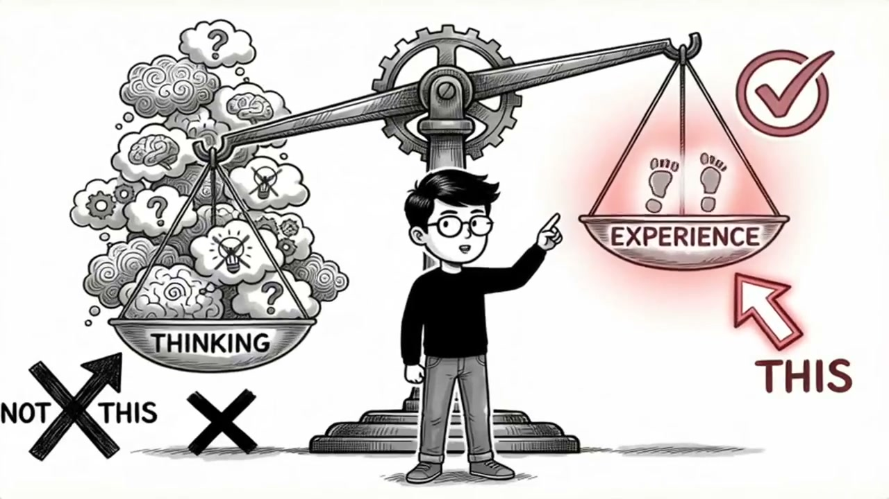
화자는 도발적 질문을 던진다: “머릿속 고민만으로 답이 나온 적이 있나?” 대체로 없고, 있었다면 지금 이 영상을 보고 있지 않았을 것이라고 말한다. 결론은 반복된다: 필요한 것은 생각의 양이 아니라 경험의 양이다.
시각적으로 저울 왼쪽 THINKING(질문·전구로 복잡한 상태)와 오른쪽 EXPERIENCE(발자국 + 체크)가 대비되고, NOT THIS/THIS 문구로 방향이 명확히 고정된다.
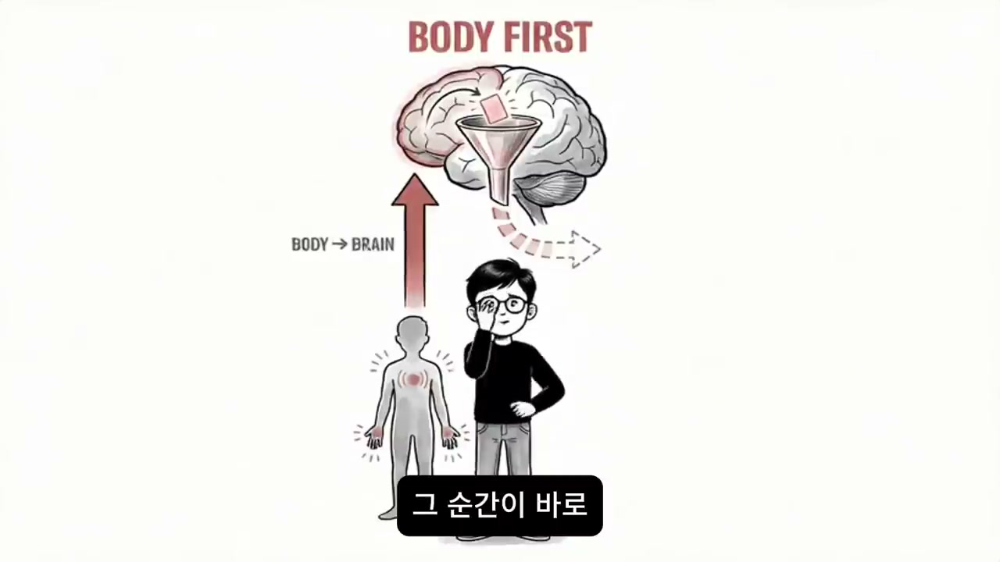
반대로, 생각하지 않았는데 답이 오는 순간은 있다. 무언가를 하다가 “이거 나랑 맞는데?”가 스치고, 산책·도움·정리 같은 행동에서 몸이 먼저 반응한다. 이 순간이 전두엽에 데이터가 입력되는 순간이며 “머리가 아니라 몸이 먼저 답을 준다”는 해석이 붙는다.
화면에는 UP, DOWN, WORD 3칸 템플릿이 등장해, 곧 설명할 실천법의 최소 단위를 예고한다. 즉 몸 반응을 텍스트로 압축해 저장하는 인터페이스다.
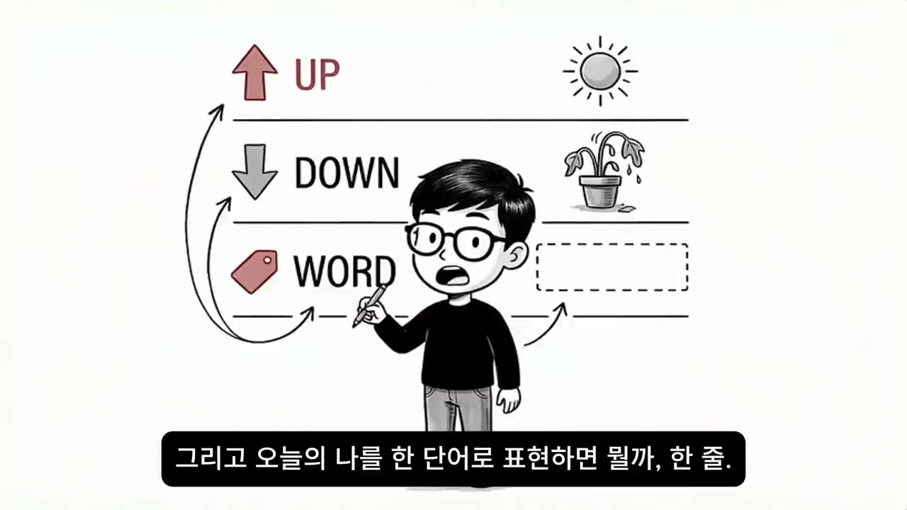
첫 번째 방법은 정체성 스냅샷이다. 잠들기 전에 딱 3줄: 에너지 올라간 순간 1줄, 에너지 내려간 순간 1줄, 오늘의 나를 한 단어로 1줄. 예시로 “점심 후 산책 기분 좋았다 / 회의 끝나고 축 처졌다 / 오늘의 나는 잠깐 괜찮았던 사람”을 제시해 난이도를 낮춘다.
화면의 BODY FIRST 도식(BODY -> BRAIN)은 이 기록법의 목적을 설명한다. 즉 기록은 자기평가가 아니라 신체 반응 데이터를 뇌 의사결정계에 입력하는 작업이다.
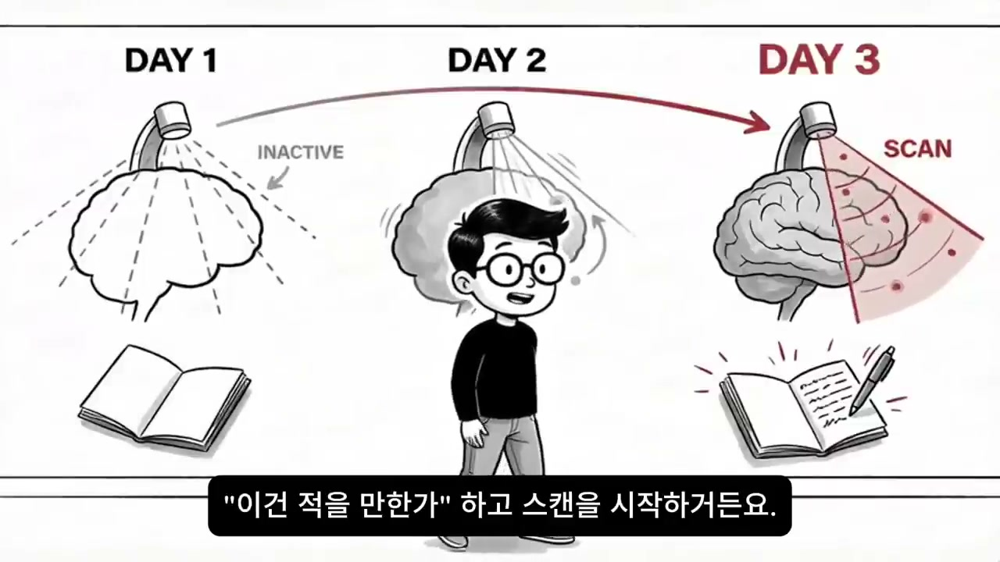
3일 정도 하면 변화가 온다고 말한다. 처음엔 멍하지만 3일째부터 손이 빨라지고, 낮 동안 뇌가 무의식적으로 “이건 적을 만한가”를 스캔하기 시작한다. 일주일이 지나면 에너지 상승 상황의 공통 패턴이 보인다.
화면은 2번 실험 미리보기인 가치 카드(FREEDOM, STABILITY, CREATIVITY, RECOGNITION, GROWTH, CONNECTION, INDEPENDENCE, CONTRIBUTION, BEAUTY, CHALLENGE)와 30 SEC를 보여준다. 즉 1번의 관찰 데이터가 2번의 가치 선택 정밀도를 높인다는 흐름을 시각적으로 연결한다.
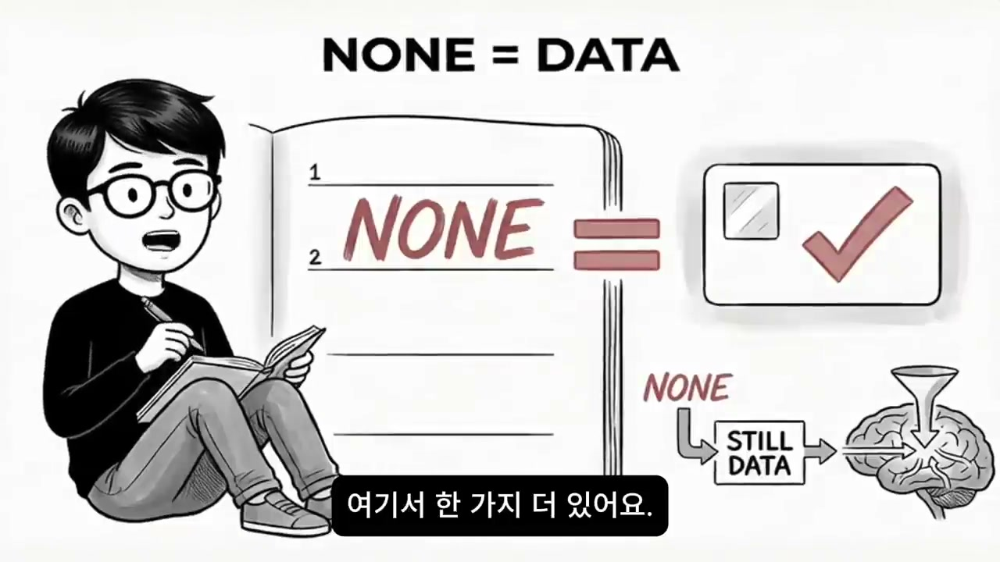
패턴의 형태는 구체적이다: 사람을 만났을 때인지, 혼자 몰입했을 때인지, 누군가를 도왔을 때인지. 화자는 이 패턴이 정체성의 “실마리”라고 말하고, 결론 조립은 뇌가 하므로 우리는 재료만 넣으면 된다고 정리한다.
또 하나의 핵심 문장: “적을 게 없는 날도 있다. 그땐 없음이라고 적으면 된다. 그것도 데이터다.” 화면의 NONE = DATA, NONE -> STILL DATA는 실패 경험까지 데이터화하는 프레임 전환을 완성한다.
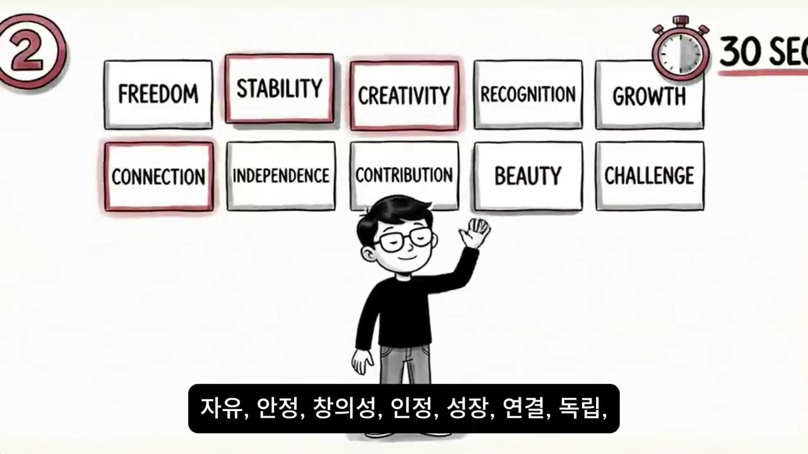
“의미 있는 순간이 없었다”는 사실 자체가 중요한 정보라는 점을 먼저 못 박는다. 이런 날이 지속되면 현재 환경과의 미스매치 신호일 수 있다. 이어 두 번째 방법으로 가치 우선순위 카드를 제시하며, 10개 단어 중 3개를 30초 안에 직감으로 고르라고 한다.
화면은 DAY 1 -> DAY 2 -> DAY 3 스캔 활성화 도식이다. 이는 반복 기록이 뇌의 탐지 기능을 깨워, 가치 선택에서도 더 신뢰할 입력을 만들게 된다는 보조 설명으로 읽힌다.
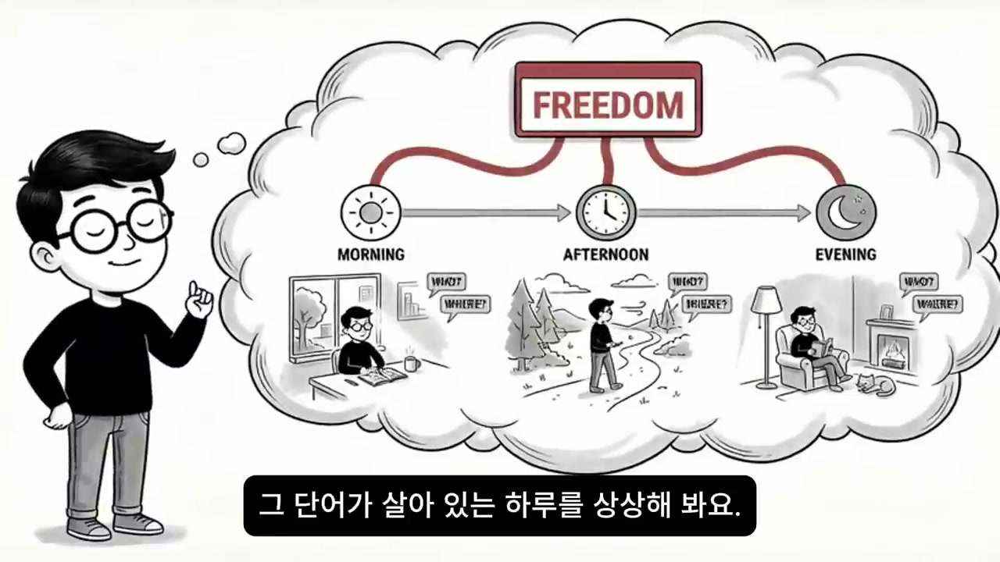
30초 제한의 이유는 명확하다. 오래 고민하면 DMN 시뮬레이션이 다시 개입해 원래 루프로 돌아가기 때문이다. 반대로 직감은 전두엽이 이미 보유한 데이터로 내리는 빠른 판정이므로, 현재의 실제 우선순위를 포착할 가능성이 높다.
화면의 NOW vs 1 MONTH SHIFT 보드는 가치 우선순위가 시간이 지나며 이동하는 과정을 시각화한다. 하단의 IDENTITY: A MOVING TRAJECTORY, EACH SHIFT IS A DATA POINT 문구가 정체성의 가변성을 공식화한다.
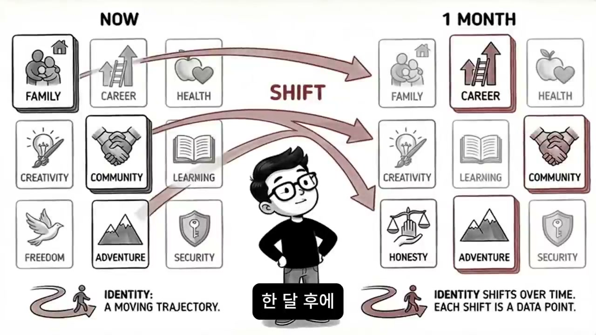
3개를 골랐다면 그 단어가 살아 있는 하루를 상상하라고 한다. 예를 들어 자유를 골랐다면 아침에 뭘 하고, 누구와 있고, 어떤 공간에 있는지를 그려보는 식이다. 이 상상은 반드시 글로 쓸 필요가 없고, 눈 감고 1분 떠올리는 것만으로도 전두엽 시뮬레이션 데이터가 입력된다고 설명한다.
화면은 FREEDOM 중심으로 MORNING-AFTERNOON-EVENING 시나리오를 만화처럼 배치해 “가치의 하루화(day-level embodiment)”를 보여준다. 한 달 뒤 같은 10단어에서 3개가 바뀔 수 있고, 그 변화 자체가 현재의 나를 보여주는 데이터라는 결론이 붙는다.
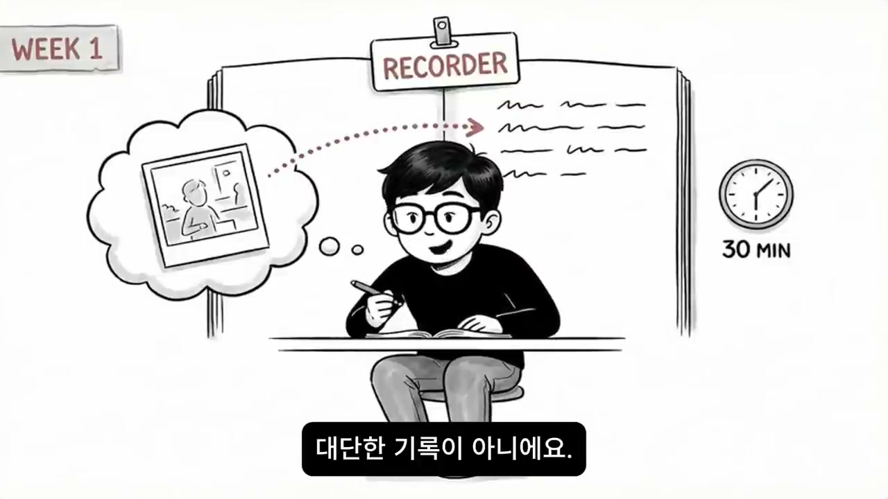
세 번째 방법은 “가장 강력한 데이터 수집법”으로 소개된다. 원리는 간단하다: 일주일 동안 하루 30분, 평소와 다른 역할 하나를 실험처럼 수행한다. 첫 주 예시는 기록하는 사람: 퇴근 후 오늘 걸렸던 장면 하나를 3~4줄 적기.
화면엔 WEEK 1, RECORDER, 30 MIN이 표시된 장면이 나온다. 즉 방법의 힘은 역할의 거창함이 아니라 짧은 반복 단위와 역할 전환에 있음을 시각적으로 고정한다.
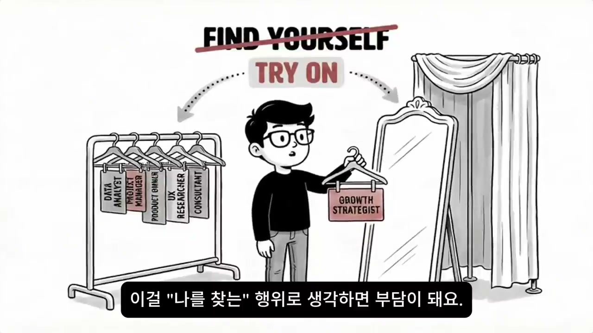
다음 주에는 정리하는 사람도 가능하다고 확장한다. 예시는 서랍 1개 정리, 파일 폴더 분류, 머릿속 생각 종이에 쏟아내기다. 이후 움직이는 사람, 만드는 사람 등으로 확장할 수 있다.
핵심 프레이밍은 “나를 찾기(find yourself)”가 아니라 “입어보기(try on)”다. 화면도 FIND YOURSELF를 지우고 TRY ON을 강조하며, 피팅룸/옷걸이 역할 라벨(예: DATA ANALYST, PRODUCT MANAGER, UX RESEARCHER, CONSULTANT, GROWTH STRATEGIST 등)로 부담을 실험 모드로 전환한다.
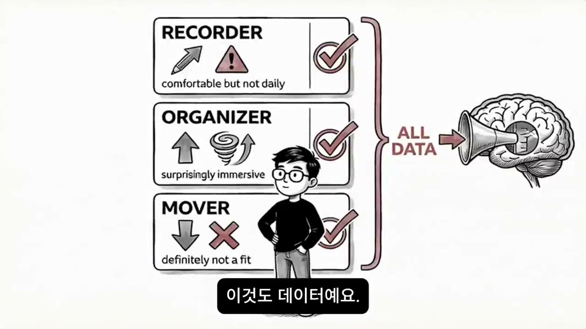
입어본 뒤 관찰 지표는 하나다: 에너지가 올라갔는지 내려갔는지. “기록은 편했지만 매일은 힘들다”, “정리는 의외로 몰입된다”, “움직임은 확실히 안 맞는다” 같은 판단을 모두 데이터로 취급한다.
이 대목의 논리는 매우 실용적이다. ‘맞는 것 찾기’만큼 ‘아닌 것 지우기’도 경로를 좁혀주며, 제거될수록 선명해진다는 것이다. 화면의 RECORDER/ORGANIZER/MOVER 카드와 ALL DATA -> 뇌 도식이 이를 요약한다.
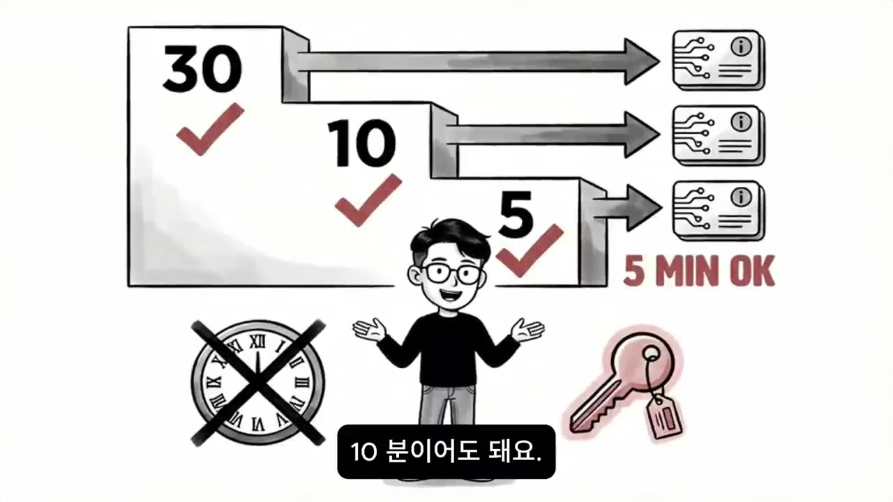
일주일에 하나면 한 달에 4개 역할, 세 달이면 12개 역할을 입어볼 수 있다고 수치를 제시한다. 이 정도가 되면 머릿속 시뮬레이션이 아니라 몸이 모은 데이터로 전두엽이 결론을 만들기 시작한다는 주장이다.
실행 장벽 완화도 명확하다: 30분이 부담이면 10분, 10분도 부담이면 5분으로 줄여도 된다. 화면 30 / 10 / 5와 5 MIN OK, 그리고 시간 자체를 부정하는 아이콘(지워진 시계)은 “핵심은 길이가 아니라 의도된 차이 경험”이라는 메시지를 전달한다.
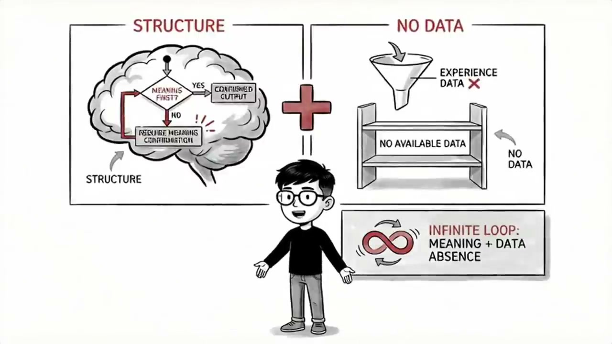
화자는 전체를 다시 요약한다. 밤마다 질문이 돌아오는 이유는 우유부단함이 아니라, 의미 없는 움직임을 거부하는 뇌 구조 + 의미 확인용 경험 데이터 부족의 결합이다. 즉 “생각이 부족”한 게 아니라 “생각에 넣을 재료가 부족”했고, “방법이 맞지 않았다”고 정리한다.
여행 비유도 재등장한다: 지도만 보고 목적지를 고르려 했기 때문이며, 한 발만 내디디면 뇌가 경로를 좁히기 시작한다. 화면의 STRUCTURE + NO DATA => INFINITE LOOP(의미 확인 구조 + 데이터 공백의 무한루프) 도식이 이 결론을 공식화한다.
실행 지시는 매우 구체적이다. 오늘 밤 질문이 와도 답을 억지로 찾지 말고 3줄만 적으라: 에너지 올라간 순간, 내려간 순간, 한 단어. 이 3줄이 쌓이면 어느 날 질문 대신 “아, 이쪽인 것 같은데”라는 조용한 감각이 온다고 말한다.
끝으로 “안 되는 게 아니다, 방법이 맞지 않았을 뿐”이라는 격려를 반복한다. 동시에 본 내용은 심리학·뇌과학 연구를 바탕으로 재구성한 교양 정보이며, 의학적 진단·치료를 대체하지 않는다고 명시한다. 화면의 나침반 파동과 기록 더미는 ‘감각의 출현은 축적의 함수’라는 메시지를 시각화한다.
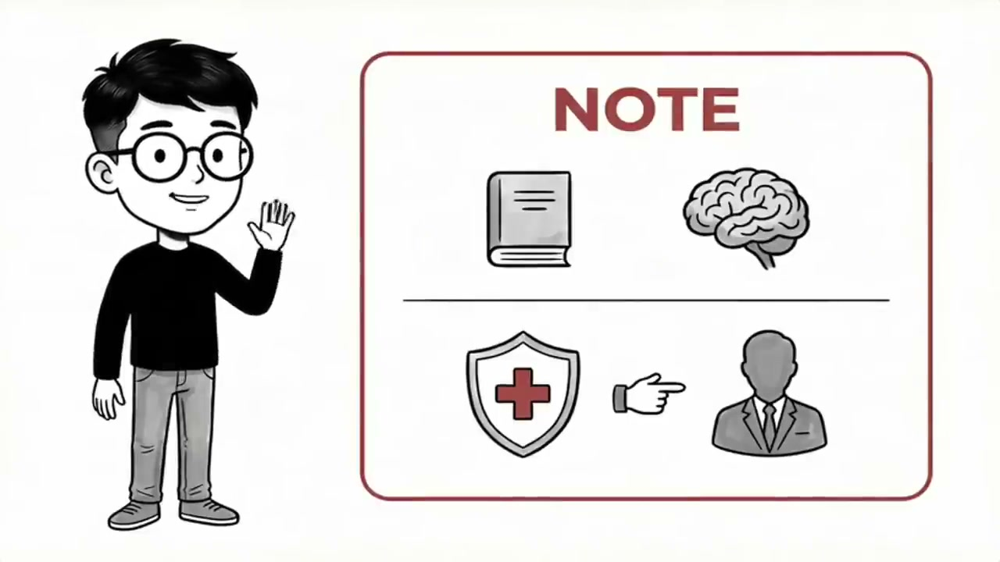
마지막 자막은 “어려움이 지속된다면 전문가...”로 끝난다. 화면의 NOTE 박스는 상단에 책·뇌 아이콘(교양/이론 정보), 하단에 의료 보호 아이콘과 전문가 실루엣(전문가 도움 필요 가능성)을 함께 배치한다.
즉 영상은 자기탐색 도구를 제안하되, 지속적 고통·기능 저하 상황에서는 전문 상담/진료로 연결해야 한다는 경계를 분명히 한다.
이 영상의 핵심 메시지는 매우 실무적이다. 정체성 질문은 철학적 정답을 한 번에 도출하는 문제가 아니라, 뇌가 결론을 낼 수 있도록 의미 있는 경험 데이터를 설계·공급하는 문제라는 것이다. 그래서 해결 경로는 ‘더 깊이 생각하기’가 아니라 ‘더 작게 실험하기’로 바뀐다.
실용적 시사점은 세 가지다. 첫째, 매일 3줄 스냅샷으로 신체 반응 데이터를 수집하라. 둘째, 가치 10개 중 3개를 30초 내 고르고 하루 시뮬레이션(1분 상상)으로 전두엽 입력을 늘려라. 셋째, 주 단위 역할 피팅(30/10/5분)으로 적합·부적합을 빠르게 지워 경로를 좁혀라.
향후 전망 관점에서, 영상은 정체성을 “고정 본질”이 아니라 “이동 궤적”으로 다룬다. 즉 한 달 후 우선순위가 달라지는 것은 실패가 아니라 업데이트이며, 그 변화를 기록하는 사람이 결국 더 빠르고 덜 고통스럽게 자기 방향을 잡게 된다는 주장이다. 마지막으로 영상 스스로도 경계를 둔다: 이 접근은 유용한 자기탐색 프레임이지만, 어려움이 지속되면 전문가 지원 체계와 연결해야 한다.
댓글
GitHub 이슈 기반 댓글 시스템입니다.